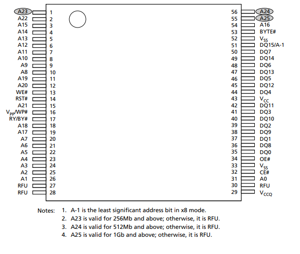
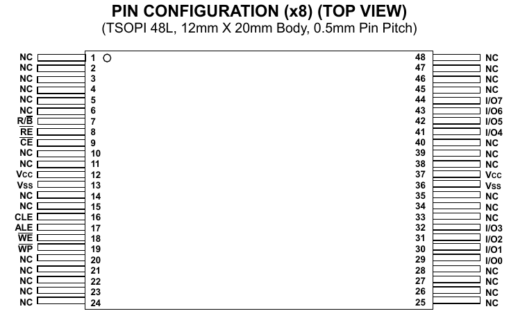
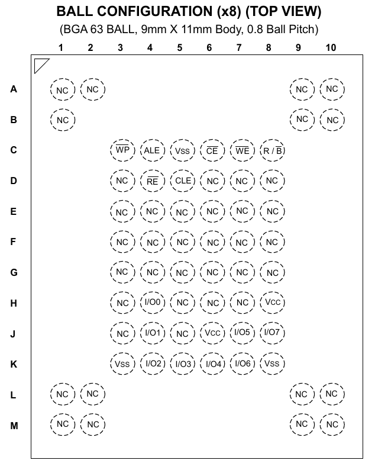
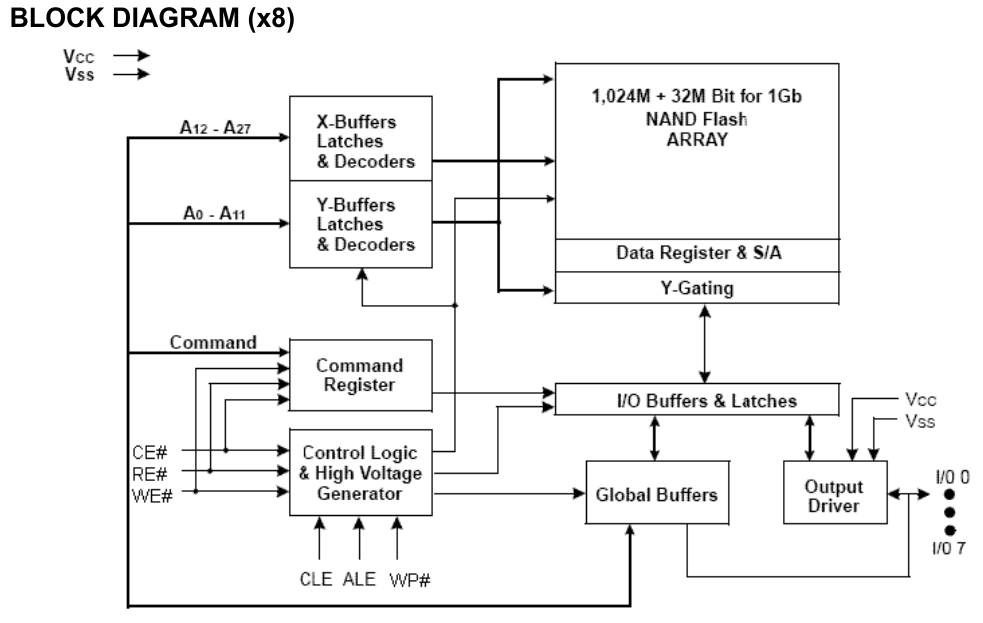
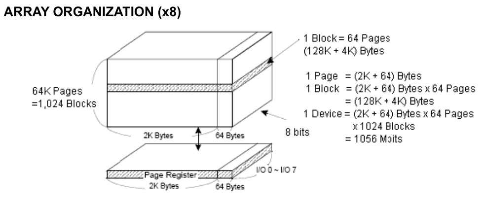

固件提取系列-固件载体
固件载体
固件 (Firmware), 在港澳台称作韧体, 在手机领域又称作字库。它位于非易失性存储(Non-Volatile Memory，NVM)中，可以被读写。在嵌入式领域，最常见的NVM类型是ROM(read-only memory)和Flash Memory， 其中ROM包括Mask ROM、PROM、EPROM、EEPROM；现在主流的ROM就是EEPROM，一般是在MCU内部；而更加主流的外存一般都是Flash Memory。
在嵌入式设备中，除了使用最基本的NAND或者NOR Flash芯片，还可能会使用eMMC；扩展存储会用到SD卡，CF卡，HDD等；这些都是有一个主控再加一个存储区，主控和上位机通信，只要能访问主控，就能读写存储芯片的内容。对于eMMC、SD卡、CF卡、HDD之类的设备，它的主控对外有通用的接口，只要用读卡器或者烧录座就可以读取。但是对于SoC直接管理的存储芯片，并没有对外部的通用接口，但是主控都是驱动控制的，所以只要能访问内存（外围设备的地址）就行了，因此有一些JTAG读固件、IAP读取固件、U-Boot读取固件的技巧，是而且理论上主控坏了，我们还能从存储区读取出固件。
只要是这些设备存放了操作系统，我把这原始的文件都称作固件。在嵌入式安全研究中，固件提取总是最初的工作，也是最重要的工作，决定了研究是否能继续下去。因此我决定整理这几年关于固件提取的知识分享出来。
EEPROM vs NOR vs NAND-Flash
由于EEPROM产品比Flash产品在擦写次数上有着更大的优势，再加上更小的尺寸和较低的擦写电流，因此成为车载应用中首选的存储技术。
但是对于性能较高的设备，就要用到Flash。NAND对比NOR，支持XIP，而且读取速度很快，但是写入和擦除速度很慢。NAND 的容量要大很多，速度快，价格也相对便宜，但是可靠性较低。
NAND以块为单位来访问数据，而NOR Flash可以随机访问数据。
要与固件载体通信，修改里面的数据，就要有相应的协议。对于EEPROM，协议主要有I2C, SPI，其中SPI有多种模式。而NAND Flash使用的是Raw NAND协议，现在几乎都遵循ONFI标准。对于NOR Flash一般有SPI协议；SPI的Flash一般遵循JEDEC SFDP(JESD216)标准，而Parallel NOR支持JEDEC CFI(JESD68)标准。
JEDEC：全称是Joint Electron Device Engineering Council 即电子元件工业联合会。JEDEC是由生产厂商们制定的国际性协议，JEDEC用来帮助程序读取Flash的制造商ID和设备ID，以确定Flash的大小和算法。
注意：不一定所有芯片都遵循这些标准。
NOR Package
NOR Flash 有并行和串行两种，串行一般是SOP封装，使用SPI协议。并行只有极少数BGA封装，一般是TSOP封装，TSOP-56, TFBGA-56, LFBGA-64。
NOR Flash Pin Assignment
NOR Flash支持随机访问，因此擦除单位是Byte。这里指的是并行信号引脚，NOR的信号线和SRAM基本上是一样的。如果飞线会特别麻烦。
| Symbol | Pin Name | Functions |
|---|---|---|
| A[MAX:0] | Address | 读写操作发送的地址数据 |
| DQ[7:0] | Data Inputs/Outputs | 用于输入输出命令和数据。 |
| DQ[14:8] | Data Inputs/Outputs | 用于输入输出命令和数据。 |
| DQ15/A-1 | Data Inputs/Outputs | 数据或地址输入 |
| BYTE# | Byte/word organization select | 选择8位或者16位 |
| CE# | Chip Enable | 芯片使能 |
| RE# | Read Enable | 读使能，数据在RE#脉冲的下降沿生效。 |
| OE# | Output Enable | 输出使能，当OE#是LOW时，读取周期会输出数据。当OE#是HIGH时，数据输出将处于高阻状态 |
| WE# | Write Enable | 写使能 |
| WP# | Write Protect | 提供意外情况的读、擦除保护，当WP#是低电平时，其他操作将无法进行。 |
| RST# | Reset | |
| RY/BY# | Read / Busy Output | 如果处于编程、擦除或随机写入操作，R/B#信号将变低，当操作完成时会变回高电平。如果芯片未被选中或输出被禁用时，该信号是漏极开路并处于高阻状态，需要采用上拉电阻。 |
| Vcc | Power | 3.3V或1.8V常电 |
| Vss | Ground | 接地 |
| NC | No Connection | 无连接 |
TSOP-56

NAND Flash
NAND Flash属于非易失性存储器，对于嵌入式设备，一般使用SLC，单位是1-bit，是一种浮栅结构，可以捕获电子并且外部绝缘，断电之后可以保留数据。Flash都不支持覆盖，即写入操作只能在空或已擦除的单元内进行。擦除方法是在源极加正电压利用第一级浮空栅与漏极之间的隧道效应，将注入到浮空栅的负电荷吸引到源极。由于利用源极加正电压擦除，因此各单元的源极联在一起，这样，擦除不能按字节擦除，而是全片或者分块擦除。
NAND Package
ONFI标准定义了一些常用的NAND封装，NAND Flash一般是TSOP和BGA的封装，都使用SMT的贴装方式。下图是不同封装的引脚定义。
TSOP-48

BGA-63

NAND Flash Pin Assignment
NAND Flash并行输入输出，一般是8位I/O，也就是x8。图中具有上划线的引脚(在这里使用"#"号表示)，是低电平有效，该引脚默认应该是上拉的状态。
| Symbol | Pin Name | Functions |
|---|---|---|
| I/O x | Data Inputs/Outputs | 用于输入输出命令、地址和数据。如果芯片未被选中或输出被禁用时，I/O口将处于高阻状态。 |
| CLE | Command Latch Enable | 指令锁存使能，当CLE为高时，在WE#脉冲的上升沿，指令被锁存到NAND指令寄存器中 |
| ALE | Address Latch Enable | 地址锁存使能，当ALE为高时，在WE#脉冲的上升沿，地址被锁存到NAND地址寄存器中。 |
| CE# | Chip Enable | 芯片使能，如果没有检测到CE信号，那么，NAND器件就保持待机模式，不对任何控制信号作出响应。 |
| RE# | Read Enable | 读使能，数据在RE#脉冲的下降沿生效。 |
| WE# | Write Enable | 写使能，WE#负责将数据、地址或指令写入NAND之中。这些操作将在WE#脉冲上升沿生效。 |
| WP# | Write Protect | 提供意外情况的读、擦除保护，当WP#是低电平时，其他操作将无法进行。 |
| R/B# | Read / Busy Output | 如果NAND处于编程、擦除或随机写入操作，R/B#信号将变低，当操作完成时会变回高电平。如果芯片未被选中或输出被禁用时，该信号是漏极开路并处于高阻状态，需要采用上拉电阻。 |
| Vcc | Power | 3.3V或1.8V常电 |
| Vss | Ground | 接地 |
| NC | No Connection | 无连接 |

Array Organization
ESMT厂商的某款8位NAND的阵列组织如下，一页有2048存储+64Cache字节，一个块含有64个页，该NAND Flash有1024个块，加上Cache就是1056M-bit。也就是128MB容量+4MB的缓存。

固件读取的工具
这里说的是非扩展存储。固件提取按照读取方式，分为下列几种：脱机读取(Chip-Off)，在线读取，内部备份。
内部备份，指拿到了设备权限，从块设备备份数据，或者从I2C、SPI驱动接口读取数据。
在线读取，指在设备上外接工具、使用设备主芯片特有的调试接口，或者是存储芯片的通用接口读取数据。一般准备USB线束，或者使用JLink，USBDM之类的调试工具（也有很多冷门芯片需要特殊调试工具），属于IAP方式提取固件。
脱机读取，把目标存储芯片拆下，使用烧录座和编程器读取。该方式读取成本较高，而且编程器和与芯片相配的主控不一定兼容，因此还要手动修复固件。
在了解了芯片的标准和通信协议后，对于一些冷门的存储芯片，其实可以不依赖编程器。使用STM32、AVR或者树莓派都能完成固件提取工作。
嵌入式设备的应用
NOR Flash和普通的内存比较像的一点是他们都可以支持随机访问，这使它也具有支持片内执行(XIP, eXecute In Place)的特性，可以像普通ROM一样执行程序。这点让它成为BIOS等开机就要执行的代码的绝佳载体。
与NOR Flash不同的是，NAND不支持XIP，因此不能存放最开始的Bootloader。
最早的手机等设备之中既有NOR Flash也有NAND Flash。NOR Flash很小，因为支持XIP，所以负责初始化系统并提供NAND Flash的驱动，类似Bootloader。而NAND Flash则存储数据和OS镜像。三星最早提出NOR less的概念，在它的CPU on die ROM中固化了NAND Flash的驱动，会把NAND flash的开始一小段拷贝到内存低端作为bootloader,这样昂贵的NOR Flash就被节省下来了，降低了手机主板成本和复杂度。渐渐NOR Flash在手机中慢慢消失了。
NAND Flash相对NOR Flash更可能发生比特翻转，就必须采用错误探测/错误更正(EDC/ECC)算法，同时NAND Flash随着使用会渐渐产生坏块；通常需要有一个特殊的软件层，实现坏块管理、擦写均衡、ECC、垃圾回收等的功能，这一个软件层称为 FTL（Flash Translation Layer）。根据 FTL 所在的位置的不同，可以把 Flash Memory 分为 Raw Flash 和 Managed Flash 两类：
最早大家都是使用Raw Flash，FTL全由驱动程序实现。后来发展到SD和eMMC等，则由硬主控实现。
因此要读取原始NAND，还要考虑坏块管理，擦写平衡，ECC等功能。
其中ECC是最难的地方，因为从编程器读取NAND很大可能会出现错误，需要纠错。大部分NAND Flash使用了硬件ECC，算法由硬件决定，对于SLC颗粒，一般使用hanming，BCH之类的算法，这些实现在网上都没有标准的源码，因此需要特殊途径搞到ECC算法。
根据存储芯片应用特性，可以推断出它的用途是存放Bootloader，是系统，还是临时数据。根据芯片支持的规范，可以读取其中的内容。
后续会分享一系列进阶的固件提取知识。
Reference
NAND vs. NOR Flash Memory Technology Overview
Understanding Flash: Blocks, Pages and Program / Erases
UEFI Blog 杂谈闪存二：NOR和NAND Flash
NAND Flash memory in embedded systems
JEDEC
ONFI